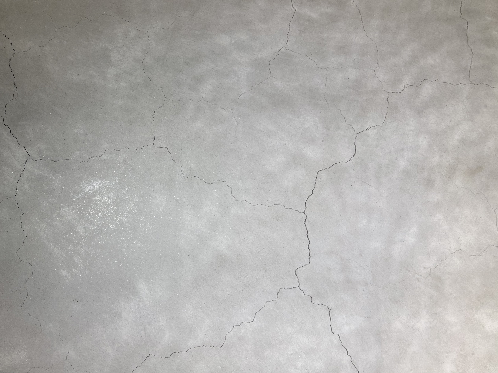

서울여자대학교 박물관
특수바닥재
콘크리트
콘크리트 바닥에서 나는 소리는 전체적으로 건조하고 단단하며, 메마른 질감이 느껴지는 발걸음 소리가 난다.
표면의 거칠기 때문에 소리가 지나갈 때 짧게 튀는 듯한 고음의 마찰음과 둔탁한 저음 충격음이 동시에 섞여 들린다.


콘크리트 바닥에서 나는 소리는 전체적으로 건조하고 단단하며, 메마른 질감이 느껴지는 발걸음 소리가 난다.
표면의 거칠기 때문에 소리가 지나갈 때 짧게 튀는 듯한 고음의 마찰음과 둔탁한 저음 충격음이 동시에 섞여 들린다.